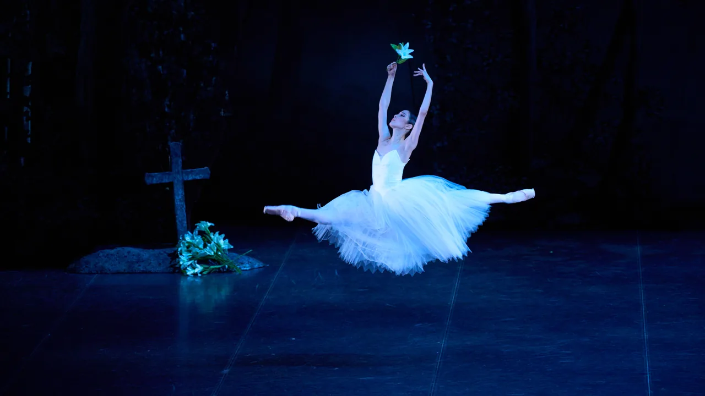
公演本編の映像は、ちあこちゃんねるメンバーシップ で公開しています
GALLERY — 舞台写真(上演順)
第1部のコンサートから、第2部『ジゼル』の村の場面、ウィリの森、カーテンコールまで。当日の舞台を、上演の流れのままお届けします。
{kind=link}
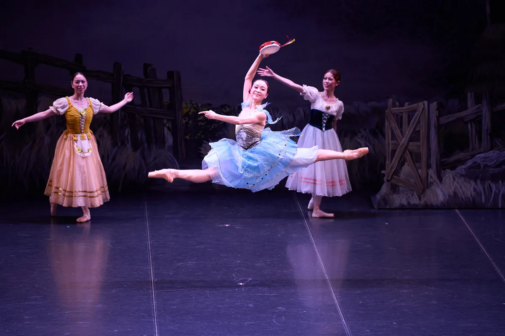
{kind=link}
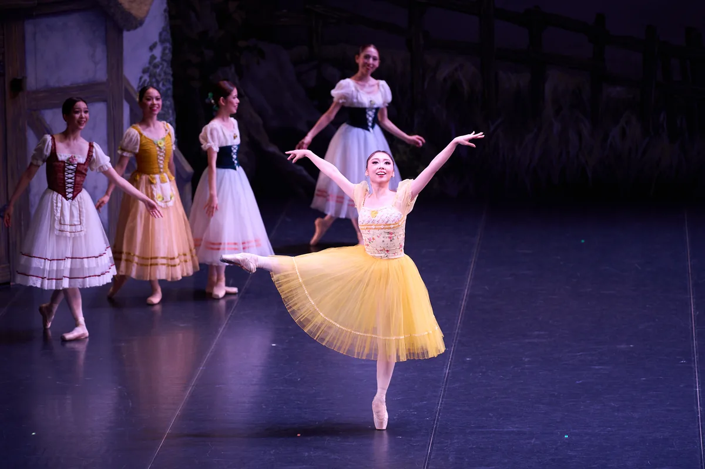
{kind=link}
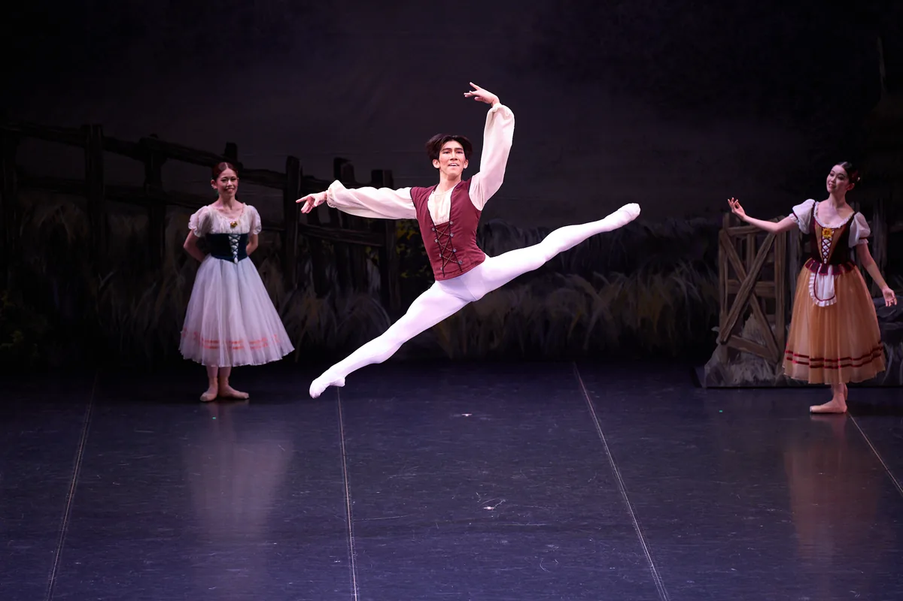
{kind=link}
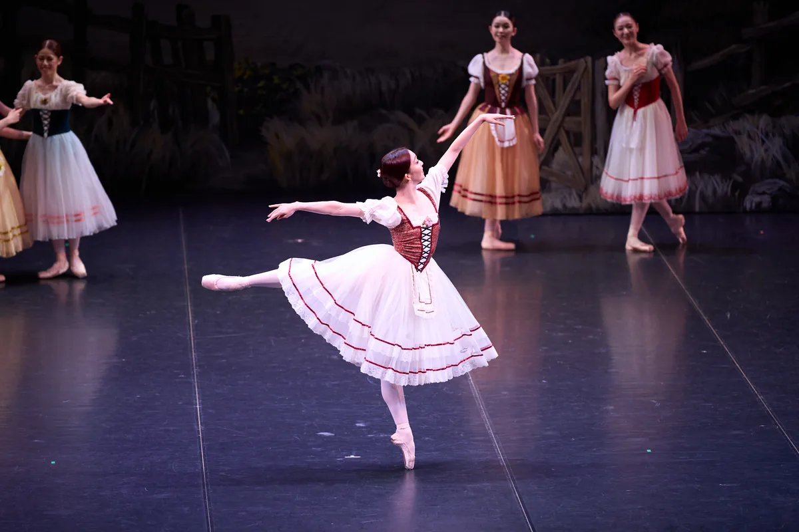
{kind=link}
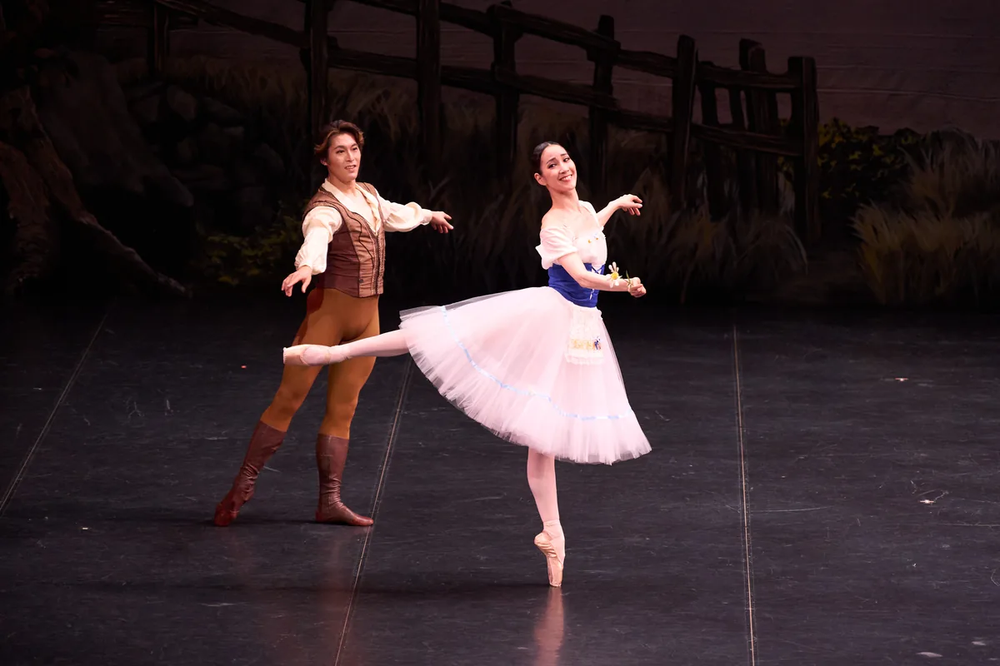
{kind=link}
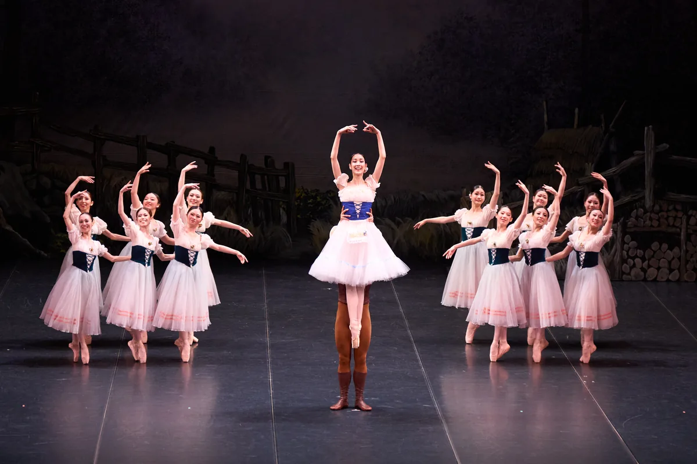
{kind=link}
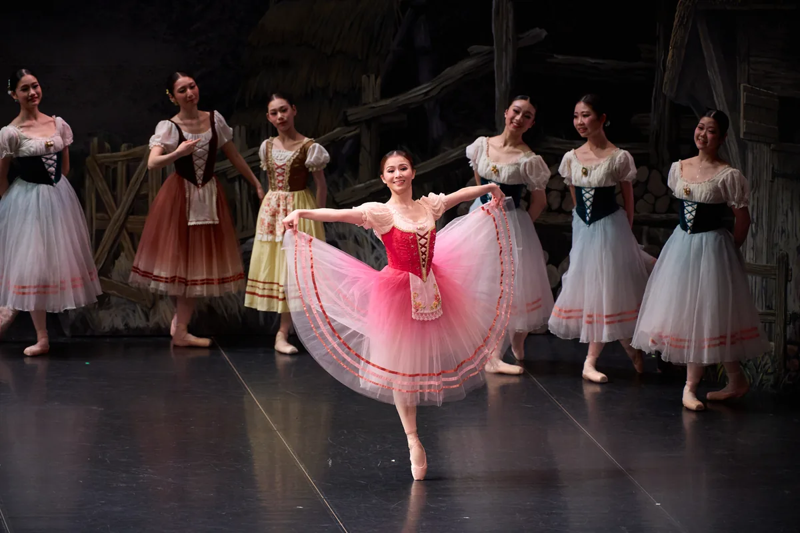
{kind=link}
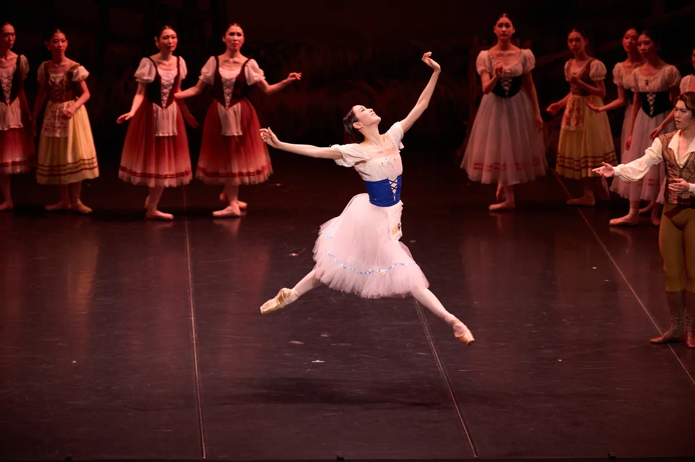
{kind=link}
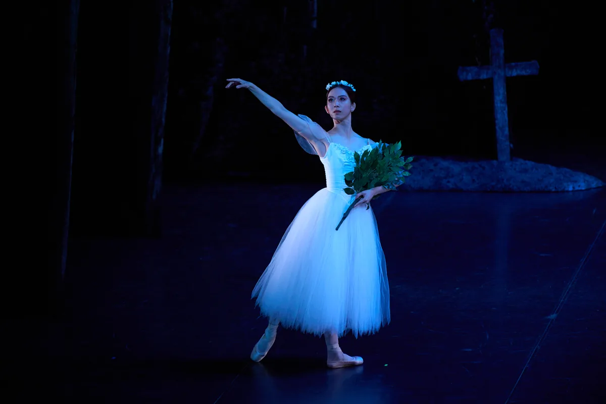
{kind=link}
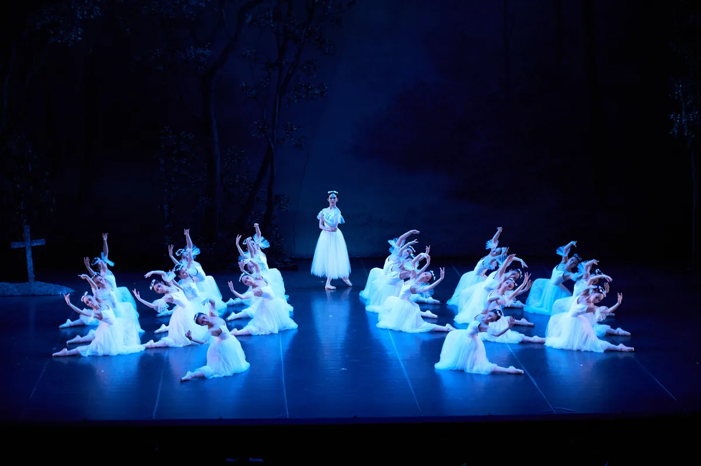
{kind=link}
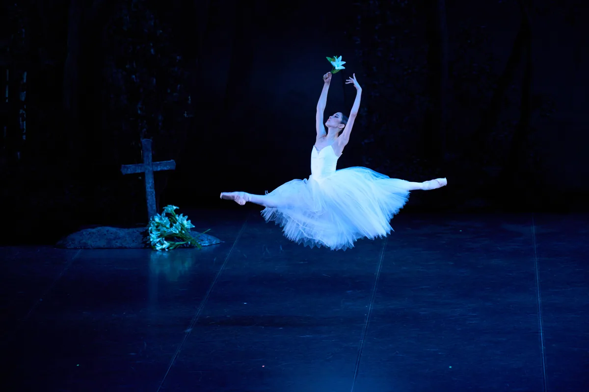
{kind=link}
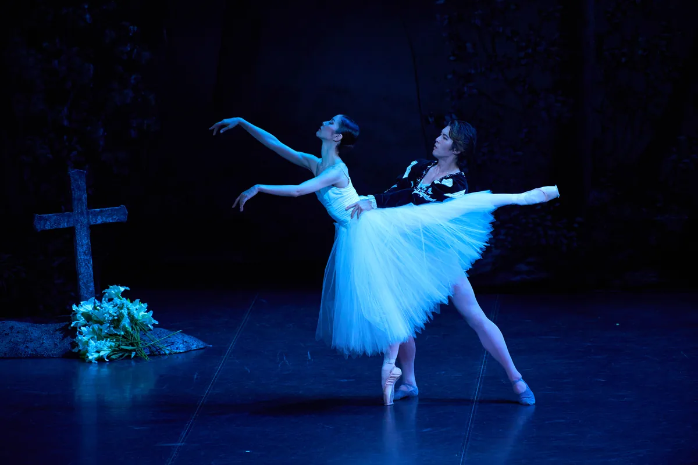
{kind=link}
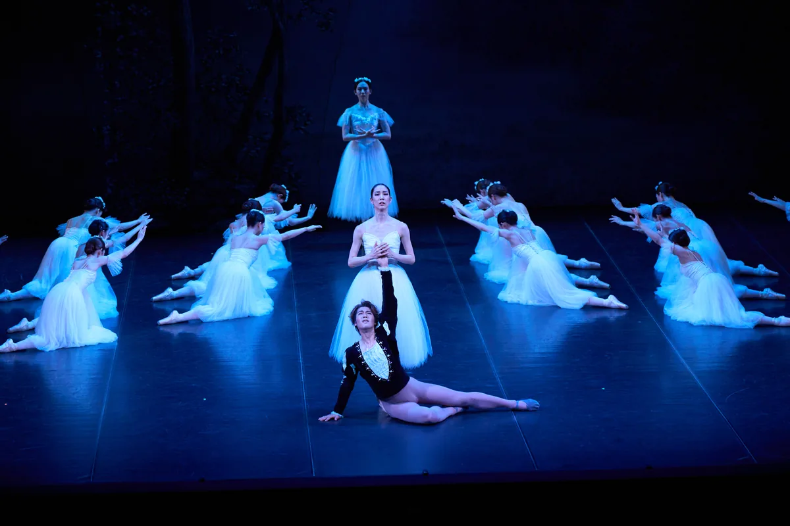
{kind=link}
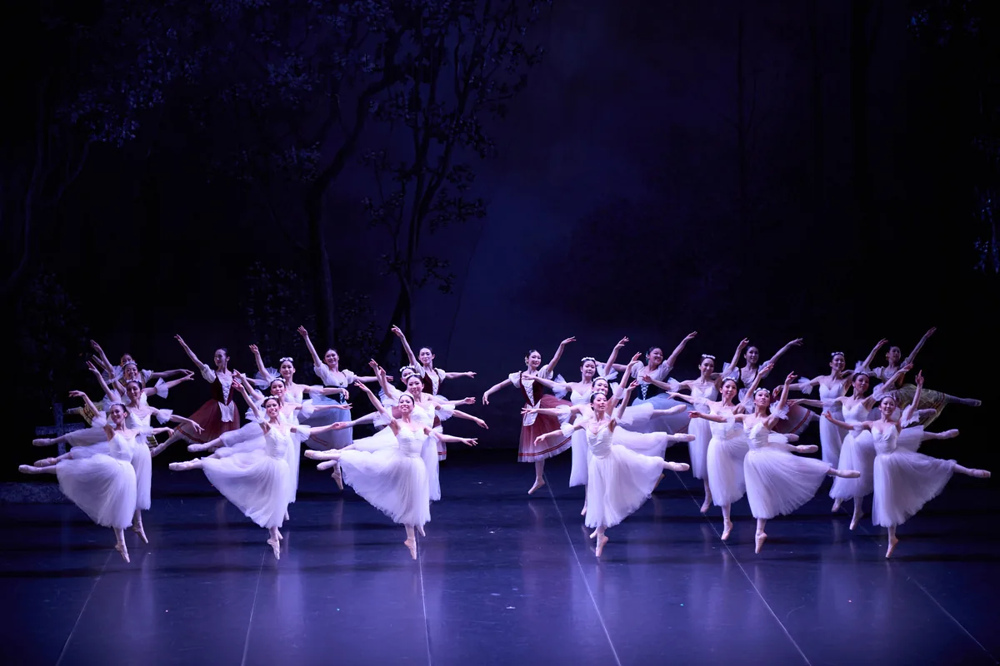
Photo: © FUKUKO IIYAMA
PROGRAM — 構成・配役
2026年7月30日(木)18:30開演、めぐろパーシモンホール 大ホール(東京・目黒)。第1部は出演ダンサーによるコンサート(35分)、20分の休憩をはさみ、第2部は『ジゼル』の名場面を凝縮した #shorts 本編(65分)を上演しました。
第1部 — コンサート
国内外のバレエ団で活躍する出演ダンサーたちが、クラシック・バレエの名品を次々と踊る35分。第2部への期待を高めるオープニングとなりました。
第2部 — ジゼル #shorts(本編)
村娘ジゼルの恋と裏切り、そして許し。第1幕(村の場面)と第2幕(ウィリの森)の名場面を凝縮してお届けしました。
- ジゼル ジゼル森田 愛海(エストニア国立バレエ団 プリンシパル)
- ジゼル アルブレヒト福岡 雄大(新国立劇場バレエ団 シーズンゲストプリンシパル)
- ジゼル ミルタ(ウィリの女王)渡辺 与布(アメリカン・バレエ・シアター)
- ジゼル ヒラリオン上中 佑樹(新国立劇場バレエ団 ソリスト)
- ジゼル バチルダ奥野 凜(ブカレスト国立オペラ座劇場バレエ団 プリンシパル)
- ジゼル ジゼルの母浅井 友香
- ジゼル ペザント・パ・ド・ドゥ鈴木 賢陽(チェコ国立バレエ団) / 本田 千晃(ちあこちゃんねる / 公演主宰)
- ジゼル ジゼルの友人山本 怜(新国立劇場バレエ団) / 内藤 亜仁(元 トルコ国立イスタンブールオペラバレエ団 プリンシパル) / 中野 伶美(元 シビウ劇場バレエ団) / 東野 瑞生(スターダンサーズ・バレエ団)
- ジゼル ドゥ・ウィリ本田 千晃 / 中野 伶美
- ジゼル コール・ド・バレエ(ウィリ / 村人)オーディションで選ばれたコール・ド・バレエ 26 名のみなさん
SERIES
ちあこと愉快な仲間達
2023年から続く、夏のバレエ公演シリーズ。
これまでの公演の記録をご覧いただけます。